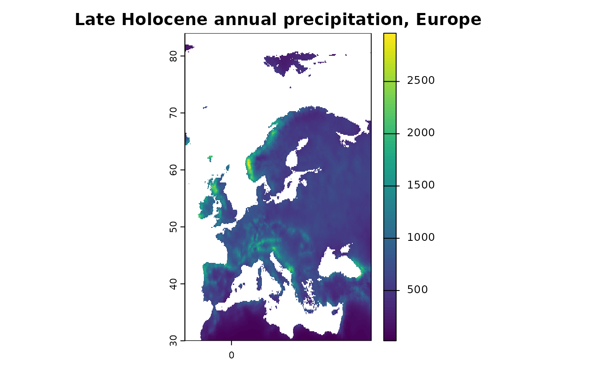

PaleoClim1 is a set of free, high resolution paleoclimate surfaces covering the whole globe. It includes data on surface temperature, precipitation and the standard bioclimatic variables commonly used in ecological modelling, derived from the HadCM3 general circulation model and downscaled to a spatial resolution of up to 2.5 minutes. Simulations are available for key time periods from the Late Holocene to mid-Pliocene. Data on current and Last Glacial Maximum climate is derived from CHELSA2 and reprocessed by PaleoClim to match their format; it is available at up to 30 seconds resolution.
This package provides a simple interface for downloading PaleoClim data in R, with support for caching and filtering retrieved data by period, resolution, and geographic extent.
Installation
You can install the development version of rpaleoclim from GitHub
using the remotes
package:
remotes::install_github("joeroe/rpaleoclim")It depends on terra, which in turn requires a recent
version of the the system libraries GDAL
and PROJ. These are included in the
binary releases of terra for Windows and MacOS, but if you
build from source (e.g. on Linux) you might need to install them first;
see the terra
README for instructions for different systems.
Data available
rpaleoclim provides an R interface to download all the data listed at http://www.paleoclim.org/ and currently mirrored at http://www.sdmtoolbox.org. The tables below were last updated 2022-02-16; please refer to the PaleoClim website for the authoritative version.
If you notice a change or update to the PaleoClim data structure that isn’t supported by the current version of the package, please report it at: https://github.com/joeroe/rpaleoclim/issues.
Periods
PaleoClim includes climate reconstructions from simulations of the following time intervals, supplemented with two additional datasets from CHELSA:
| code | period | bp | source |
|---|---|---|---|
| cur | Current (1979 – 2013) | CHELSA | |
| lh | Late Holocene: Meghalayan | 4.2-0.3 ka | Fordham et al. 2017 |
| mh | Mid Holocene: Northgrippian | 8.326-4.2 ka | Fordham et al. 2017 |
| eh | Early Holocene: Greenlandian | 11.7-8.326 ka | Fordham et al. 2017 |
| yds | Pleistocene: Younger Dryas Stadial | 12.9-11.7 ka | Fordham et al. 2017 |
| ba | Pleistocene: Bølling-Allerød | 14.7-12.9 ka | Fordham et al. 2017 |
| hs1 | Pleistocene: Heinrich Stadial 1 | 17.0-14.7 ka | Fordham et al. 2017 |
| lgm | Pleistocene: Last Glacial Maximum | ca. 21 ka | CHELSA |
| lig | Pleistocene: Last Interglacial | ca. 130 ka | Otto-Bliesner et al. 2006 |
| mis19 | Pleistocene: MIS19 | ca. 787 ka | Brown et al. 2018 |
| mpwp | Pliocene: Mid-Pliocene warm period | 3.205 Ma | Hill 2015 |
| m2 | Pliocene: M2 | ca. 3.3 Ma | Dolan et al. 2015 |
Bioclimatic variables
PaleoClim uses the 16 standard “bioclimatic variables” with their conventional coding:
| biovar | definition | formula |
|---|---|---|
| bio_1 | Mean annual temperature | |
| bio_2 | Mean diurnal range | |
| bio_3 | Isothermality | (bio2 / bio7) * 100 |
| bio_4 | Temperature seasonality | sd(temp) * 100 |
| bio_5 | Maximum temperature of warmest month | |
| bio_6 | Minimum temperature of coldest month | |
| bio_7 | Annual temperature range | bio5 - bio6 |
| bio_8 | Mean temperature of wettest quarter | |
| bio_9 | Mean temperature of driest quarter | |
| bio_10 | Mean temperature of warmest quarter | |
| bio_11 | Mean temperature of coldest quarter | |
| bio_12 | Total annual precipitation | |
| bio_13 | Precipitation of wettest month | |
| bio_14 | Precipitation of driest month | |
| bio_15 | Precipitation seasonality | |
| bio_16 | Precipitation of wettest quarter | |
| bio_17 | Precipitation of driest quarter | |
| bio_18 | Precipitation of warmest quarter | |
| bio_19 | Precipitation of coldest quarter |
Retrieving data
library(rpaleoclim)
library(terra)
#> terra 1.7.29Use paleoclim() to download paleoclimate data from
PaleoClim, specifying the desired time period (see above) and
resolution. For example, to download data for the Late Holocene
("lh") at 10 min resolution:
paleoclim("lh", "10m")
#> class : SpatRaster
#> dimensions : 1044, 2160, 19 (nrow, ncol, nlyr)
#> resolution : 0.1666667, 0.1666667 (x, y)
#> extent : -180.0001, 179.9999, -90.00014, 83.99986 (xmin, xmax, ymin, ymax)
#> coord. ref. : lon/lat WGS 84 (EPSG:4326)
#> sources : bio_1.tif
#> bio_10.tif
#> bio_11.tif
#> ... and 16 more source(s)
#> names : bio_1, bio_10, bio_11, bio_12, bio_13, bio_14, ...
#> min values : -526, -334, -656, 0, 0, 0, ...
#> max values : 314, 385, 288, 9696, 2399, 651, ...The result is a SpatRaster object with up to 19 layers
containing reconstructed values of the standard “bioclimatic variables”
(see above) for this period. Consult the terra
documentation for information on working
with spatial raster data in R.
By default, paleoclim() loads the entire downloaded
raster into R, i.e. the whole globe. You can conveniently crop it to a
specific (rectangular) region of interest with the region
argument. This can be specified with a SpatExtent object or
anything coercible to one (see ?terra::ext), which includes
most spatial data types, or simply a vector of coordinates (xmin, xmax,
ymin, ymax):
europe <- c(-15, 45, 30, 90)
europe_lh <- paleoclim("lh", "10m", region = europe)
plot(europe_lh[["bio_12"]], main = "Late Holocene annual precipitation, Europe")
If you have already downloaded data from PaleoClim and simply want to
read it into R, you can do so with load_paleoclim(),
passing it the path to the .zip archive:
zipfile <- system.file("testdata", "LH_v1_10m_cropped.zip",
package = "rpaleoclim")
load_paleoclim(zipfile)
#> class : SpatRaster
#> dimensions : 6, 6, 19 (nrow, ncol, nlyr)
#> resolution : 0.1666667, 0.1666667 (x, y)
#> extent : 0, 1, 0, 1 (xmin, xmax, ymin, ymax)
#> coord. ref. : lon/lat WGS 84 (EPSG:4326)
#> sources : bio_1.tif
#> bio_10.tif
#> bio_11.tif
#> ... and 16 more source(s)
#> names : bio_1, bio_10, bio_11, bio_12, bio_13, bio_14, ...
#> min values : -526, -334, -656, 0, 0, 0, ...
#> max values : 314, 385, 288, 9696, 2399, 651, ...Caching
Note that in the examples above, we only downloaded data from the
PaleoClim servers once. Repeated calls to paleoclim() that
ask for the same time period and resolution reuse cached versions of the
previously downloaded file. By default, these files are stored in R’s
temporary directory, so that you only download the files once per
session. The cached files are never modified; subsequent cropping,
warping, etc. is either done in-memory or creates new temporary
files.
The cache_path argument controls the directory that
paleoclim() downloads files to and tries to read cached
data from. It can be useful to change this to somewhere within the
working directory to reuse the same files between sessions and ensure
your analysis can be reproduced in the future, even if the remote
PaleoClim data changes or disappears.
skip_cache = TRUE will force paleoclim() to
download files from PaleoClim even if cached data exists in
cache_path (in which case it will overwrite it).
quiet = TRUE suppresses messages about whether the data
is being downloaded or read from a cached file.
Backwards compatibility with raster
Since version 0.9.1, rpaleoclim has depended on the terra package for reading and
manipulating spatial data. Previous versions used raster and rgdal,
which are
now deprecated. To use the old raster types, you will
need to install the optional dependencies raster and
rgdal (like terra, these require GDAL and PROJ
system libraries):
install.packages(c("rgdal", "raster"))Then pass as = "raster" to paleoclim() or
load_paleoclim() to return the data as a
RasterStack object instead of a
SpatRaster.
paleoclim("lh", "10m", as = "raster")
#> Warning: `as = "raster"` is deprecated and will be removed in future versions of rpaleoclim
#> This warning is displayed once per session.
#> class : RasterStack
#> dimensions : 1044, 2160, 2255040, 19 (nrow, ncol, ncell, nlayers)
#> resolution : 0.1666667, 0.1666667 (x, y)
#> extent : -180.0001, 179.9999, -90.00014, 83.99986 (xmin, xmax, ymin, ymax)
#> crs : +proj=longlat +datum=WGS84 +no_defs
#> names : bio_1, bio_10, bio_11, bio_12, bio_13, bio_14, bio_15, bio_16, bio_17, bio_18, bio_19, bio_2, bio_3, bio_4, bio_5, ...
#> min values : -526, -334, -656, 0, 0, 0, 0, 0, 0, 0, 0, 6, 3, 116, -292, ...
#> max values : 314, 385, 288, 9696, 2399, 651, 215, 6321, 2025, 5128, 3860, 169, 90, 24243, 481, ...Please note that raster support will be removed in a
future version of rpaleoclim.
Citing data
Please follow the instructions from the authors when citing PaleoClim data. At time of writing, this includes a citation to the paper the describing the PaleoClim database:
- Brown, J.L., Hill, D.J., Dolan, A.M., Carnaval, A.C., Haywood, A.M., 2018. PaleoClim, high spatial resolution paleoclimate surfaces for global land areas. Scientific Data 5, 180254. doi:10.1038/sdata.2018.254
As well as the original papers for the individual original datasets used.
Use citation("paleoclim") for more details and the
references in BibTeX format.